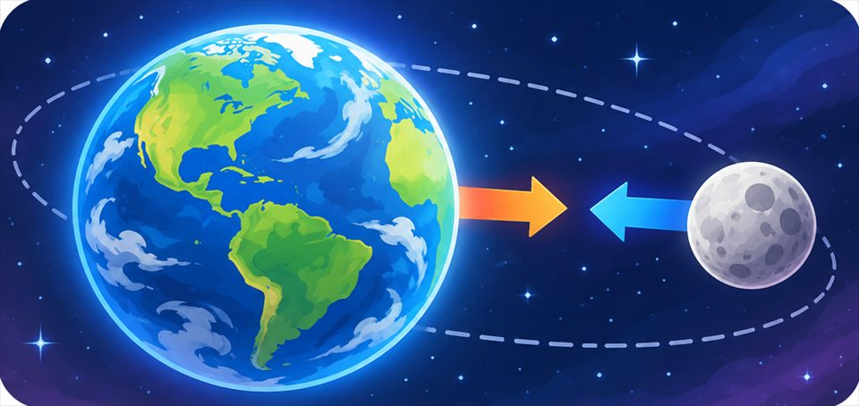

The big idea driving this unit
Gravity pulls any two masses together, more strongly when they have more mass or are closer. That pull lets a lifted object store energy based on its mass and height, energy that turns into motion as it falls without ever disappearing.
Chapters in this unit
- 1 Gravitational Potential EnergyWhat decides how much energy a roller coaster cart stores while it sits at the top of a 200-foot hill?MS-PS3-2
-
2

Universal Law of GravityIf any two objects with mass pull on each other, why does Earth's gravity noticeably affect you while two backpacks on a desk never visibly attract?MS-PS2-4MS-PS2-5MS-ESS1-2 -
3
 Gravitational Potential Energy to Kinetic EnergyThe instant a roller coaster cart tips over the top of the first hill and starts speeding downward, where does all that stored energy actually go?MS-PS3-1MS-PS3-2MS-PS3-5
Gravitational Potential Energy to Kinetic EnergyThe instant a roller coaster cart tips over the top of the first hill and starts speeding downward, where does all that stored energy actually go?MS-PS3-1MS-PS3-2MS-PS3-5